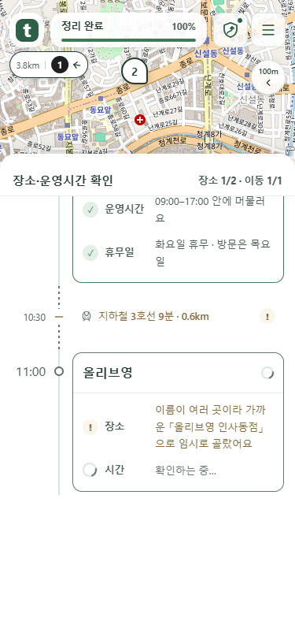
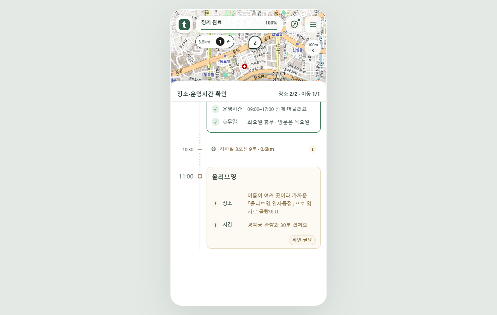

새 일정은 가운데로, 이전 일정은 거리 표시로
1 → 2 → 3번 순서로 등장합니다. 지도 밖으로 멀어진 일정도 번호와 거리를 표시합니다.
장면별 확인
- 1번 등장첫 일정을 지도 가운데에서 보여 줍니다.
- 2번으로 부드럽게 이동2번은 지도에, 멀어진 1번은 왼쪽에 ‘1 · 3.8km’로 따로 표시합니다.
- 3번 등장 후 전체 보기앞선 일정을 유지하고, 확인이 끝나면 그날 일정을 함께 보여 줍니다.
2번은 지도 가운데, 1번은 왼쪽 거리 표시로 유지됩니다.
넓은 화면 확인 · 1280px

수정한 로컬 앱을 Chrome에서 촬영한 목업입니다. 시험용 일정의 위치 간격을 넓혀 거리 표시를 확인했습니다. 지도 배경 © OpenStreetMap contributors. 공개 서비스 반영 전입니다.